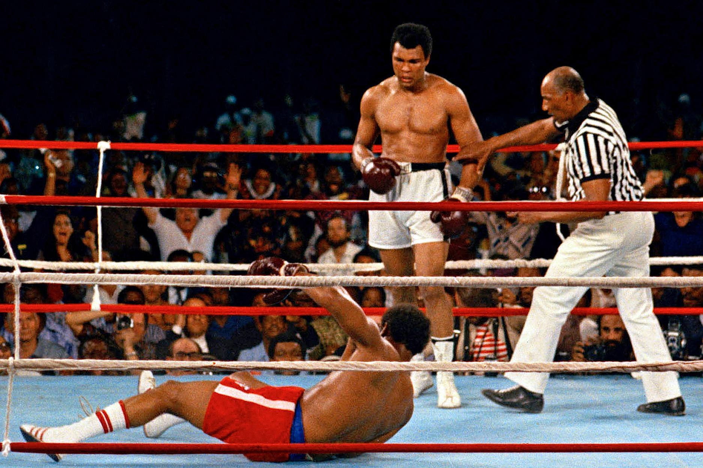

Ali was born and raised in Louisville, Kentucky. He began training as an amateur boxer at age 12. At 18, he won a gold medal in the light heavyweight division at the 1960 Summer Olympics and turned professional later that year. He became a Muslim after 1961. He won the world heavyweight championship from Sonny Liston in a major upset February 25, 1964, at age 22. On March 6, 1964, Nation of Islam leader Elijah Muhammad announced that Cassius Clay would henceforth be known as Muhammad Ali.
Ali was a leading heavyweight boxer of the 20th century, and he remains the only three-time lineal champion of that division. His joint records of beating 21 boxers for the world heavyweight title and winning 14 unified title bouts stood for 35 years.He is the only fighter to have been ranked as the world's best heavyweight by BoxRec twelve times. He has been ranked among BoxRec's ten best heavyweights seventeen times, the third most in history.
Early career
Clay made his professional debut on October 29, 1960, winning a six-round decision over Tunney Hunsaker. From then until the end of 1963, Clay amassed a record of 19–0 with 15 wins by knockout. He defeated boxers including Tony Esperti, Jim Robinson, Donnie Fleeman, Alonzo Johnson, George Logan, Willi Besmanoff, LaMar Clark, Doug Jones and Henry Cooper. Clay also beat his former trainer and veteran boxer Archie Moore in a 1962 match.These early fights were not without trials. Clay was knocked down by both Sonny Banks and Cooper. In the Cooper fight, Clay was floored by a left hook at the end of round four and was saved by the bell, going on to win in the predicted 5th round due to Cooper's severely cut eye. The fight with Doug Jones on March 13, 1963 was Clay's toughest fight during this stretch. The number two and three heavyweight contenders respectively, Clay and Jones fought on Jones' home turf at New York's Madison Square Garden. Jones staggered Clay in the first round, and the unanimous decision for Clay was greeted by boos and a rain of debris thrown into the ring. Watching on closed-circuit TV, heavyweight champ Sonny Liston quipped that if he fought Clay he might get locked up for murder. The fight was later named "Fight of the Year" by The Ring magazine.
World heavyweight champion
Fights against Liston
By late 1963, Clay had become the top contender for Sonny Liston's title. The fight was set for February 25, 1964, in Miami Beach. Liston was an intimidating personality, a dominating fighter with a criminal past and ties to the mob. Based on Clay's uninspired performance against Jones and Cooper in his previous two fights, and Liston's destruction of former heavyweight champion Floyd Patterson in two first-round knockouts, Clay was a 7–1 underdog. Despite this, Clay taunted Liston during the pre-fight buildup, dubbing him "the big ugly bear", stating "Liston even smells like a bear" and claiming "After I beat him I'm going to donate him to the zoo."
The outcome of the fight was a major upset. At the opening bell, Liston rushed at Clay, seemingly angry and looking for a quick knockout. However, Clay's superior speed and mobility enabled him to elude Liston, making the champion miss and look awkward. At the end of the first round, Clay opened up his attack and hit Liston repeatedly with jabs. Liston fought better in round two, but at the beginning of the third round Clay hit Liston with a combination that buckled his knees and opened a cut under his left eye. This was the first time Liston had ever been cut. At the end of round four, Clay was returning to his corner when he began experiencing blinding pain in his eyes and asked his trainer, Angelo Dundee, to cut off his gloves. Dundee refused. It has been speculated that the problem was due to ointment used to seal Liston's cuts, perhaps deliberately applied by his corner to his gloves.
Fight against Joe Frazier
Ali and Frazier's first fight, held at the Garden on March 8, 1971, was nicknamed the "Fight of the Century", due to the tremendous excitement surrounding a bout between two undefeated fighters, each with a legitimate claim to be heavyweight champion. Veteran boxing writer John Condon called it "the greatest event I've ever worked on in my life." The bout was broadcast to 35 foreign countries; promoters granted 760 press passes.Adding to the atmosphere were the considerable pre-fight theatrics and name calling. In the lead-up to the fight Frazier called Ali, "Clay", this angered Ali so he portrayed Frazier as a "dumb tool of the white establishment." "Frazier is too ugly to be champ", Ali said. "Frazier is too dumb to be champ." Ali also frequently called Frazier an "Uncle Tom". Dave Wolf, who worked in Frazier's camp, recalled that, "Ali was saying 'the only people rooting for Joe Frazier are white people in suits, Alabama sheriffs, and members of the Ku Klux Klan. I'm fighting for the little man in the ghetto.' Joe was sitting there, smashing his fist into the palm of his hand, saying, 'What the fuck does he know about the ghetto?'"
The Monday night fight lived up to its billing. In a preview of their two other fights, a crouching, bobbing and weaving Frazier constantly pressured Ali, getting hit regularly by Ali jabs and combinations, but relentlessly attacking and scoring repeatedly, especially to Ali's body. The fight was even in the early rounds, but Ali was taking more punishment than ever in his career. On several occasions in the early rounds he played to the crowd and shook his head "no" after he was hit. In the later rounds—in what was the first appearance of the "rope-a-dope strategy"—Ali leaned against the ropes and absorbed punishment from Frazier, hoping to tire him. In the 11th round, Frazier connected with a left hook that wobbled Ali, but because it appeared that Ali might be clowning as he staggered backwards across the ring, Frazier hesitated to press his advantage, fearing an Ali counter-attack. In the final round, Frazier knocked Ali down with a vicious left hook, which referee Arthur Mercante said was as hard as a man can be hit. Ali was back on his feet in three seconds.Nevertheless, Ali lost by unanimous decision, his first professional defeat.
The Rumble in the Jungle
The defeat of Frazier set the stage for a title fight against heavyweight champion George Foreman in Kinshasa, Zaire, on October 30, 1974—a bout nicknamed The Rumble in the Jungle. Foreman was considered one of the hardest punchers in heavyweight history. In assessing the fight, analysts pointed out that Joe Frazier and Ken Norton, who had given Ali four tough battles and won two of them, had both been devastated by Foreman in second-round knockouts. Ali was 32 years old, and had clearly lost speed and reflexes since his twenties. Contrary to his later persona, Foreman was at the time a brooding and intimidating presence. Almost no one associated with the sport, not even Ali's long-time supporter Howard Cosell, gave the former champion a chance of winning.As usual, Ali was confident and colorful before the fight. He told interviewer David Frost, "If you think the world was surprised when Nixon resigned, wait till I whup Foreman's behind!"
Ali opened the fight moving and scoring with right crosses to Foreman's head. Then, beginning in the second round, and to the consternation of his corner, Ali retreated to the ropes and invited Foreman to hit him while covering up, clinching and counter-punching, all while verbally taunting Foreman. The move, which would later become known as the "Rope-a-dope", so violated conventional boxing wisdom—letting one of the hardest hitters in boxing strike at will—that at ringside writer George Plimpton thought the fight had to be fixed.Foreman, increasingly angered, threw punches that were deflected and did not land squarely. Midway through the fight, as Foreman began tiring, Ali countered more frequently and effectively with punches and flurries, which electrified the pro-Ali crowd. In the eighth round, Ali dropped an exhausted Foreman with a combination at center ring; Foreman failed to make the count. Against the odds, and amidst pandemonium in the ring, Ali had regained the title by knockout. Reflecting on the fight, George Foreman later said: "I thought Ali was just one more knockout victim until, about the seventh round, I hit him hard to the jaw and he held me and whispered in my ear: 'That all you got, George?' I realized that this ain't what I thought it was."
It was a major upset victory,after Ali came in as a 4–1 underdog against the previously unbeaten, heavy-hitting Foreman.The fight became famous for Ali's introduction of the rope-a-dope tactic.The fight was watched by a record estimated television audience of 1 billion viewers worldwide.